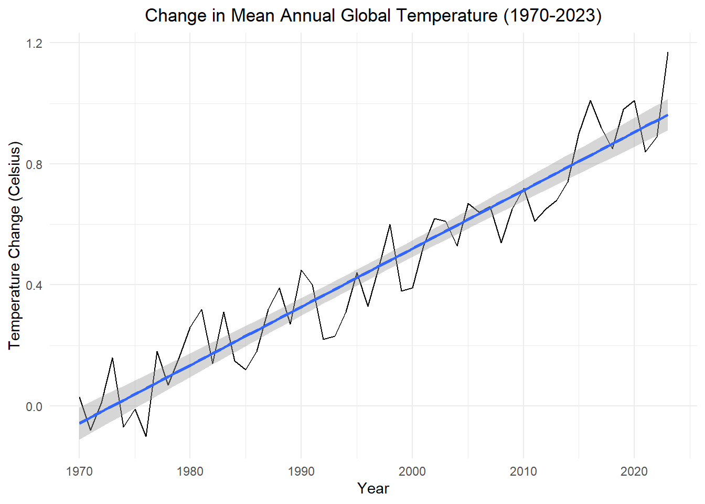
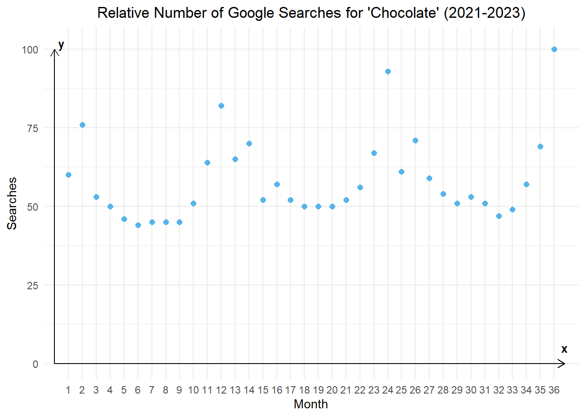
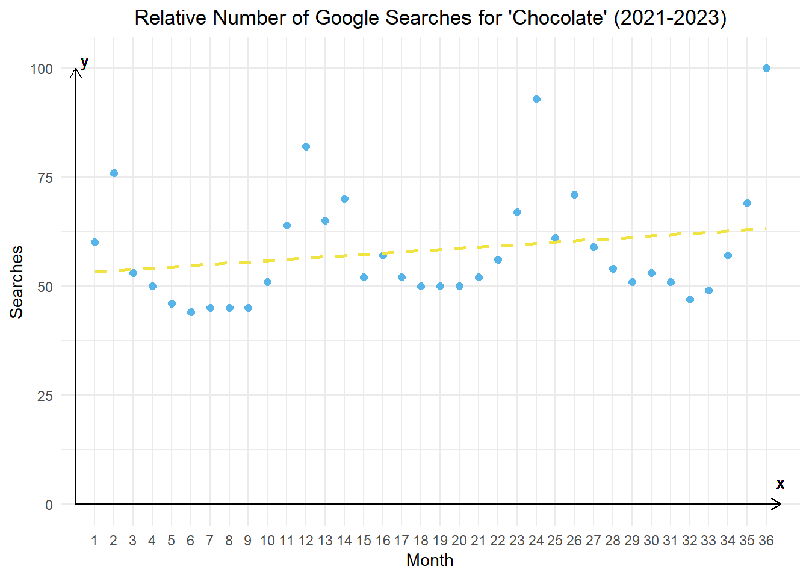
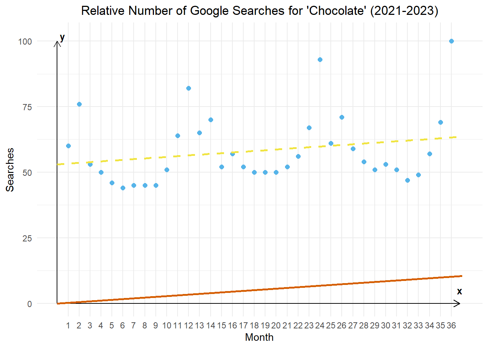
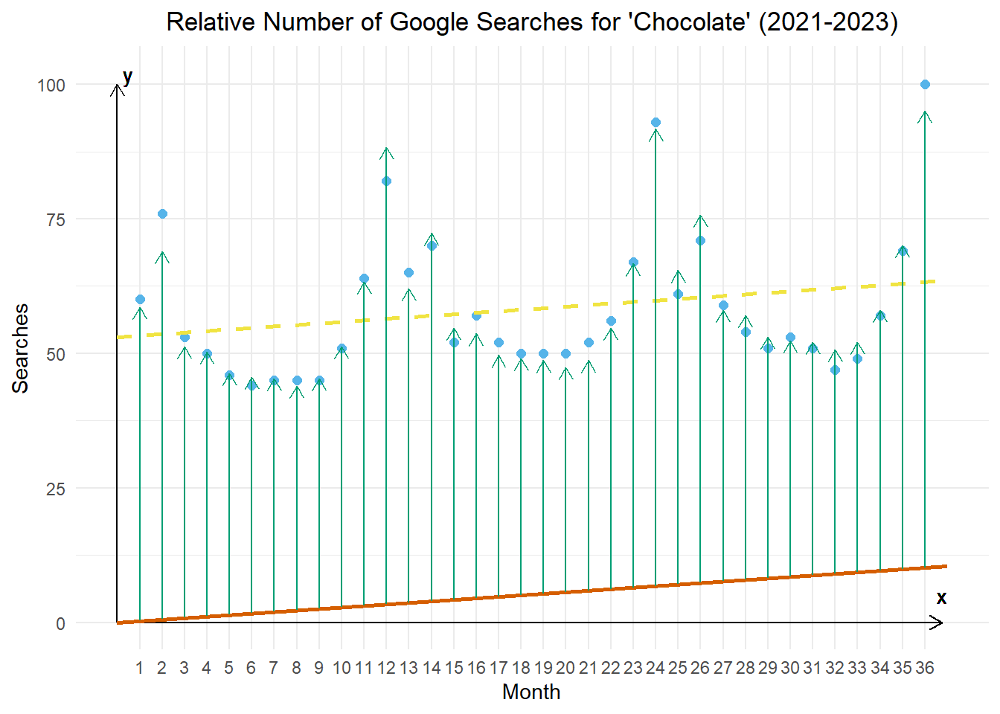

Linear Models, GLS, and Seasonal Indicator Variables
Chapter 5: Lesson 1
Learning Outcomes
Explain the difference between stochastic and deterministic trends in time series
Describe deterministic trends as smooth, predictable changes over time
Define stochastic trends as random, unpredictable fluctuations
Explain the different treatment of stochastic and deterministic trends when forecasting
Fit linear regression models to time series data
Define a linear time series model
Explain why ordinary linear regression systematically underestimates of the standard error of parameter estimates when the error terms are autocorrelated
Apply generalized least squares GLS in R to estimate linear regression model parameters
Explain how to estimate the autocorrelation input for the GLS algorithm
Compare GLS and OLS standard error estimates to evaluate autocorrelation bias
Identify an appropriate function to model the trend in a given time series
Represent seasonal factors in a regression model using indicator variables
Fit a linear model for a simulated time series with linear time trend and \(AR(p)\) error
Use acf and pacf to test for autocorrelation in the residuals
Estimate a seasonal indicator model using GLS
Forecast using a fitted GLS model with seasonal indicator variables
Apply differencing to nonstationary time series
Transform a non-stationary linear to a stationary process using differencing
State how to remove a polynomial trend of order \(m\)
Simulate time series
Simulate a time series with a linear time trend and a \(AR(p)\) error
Preparation
Read Sections 5.1-5.5
Learning Journal Exchange (10 min)
Review another student’s journal
What would you add to your learning journal after reading another student’s?
What would you recommend the other student add to their learning journal?
Sign the Learning Journal review sheet for your peer
Small Group Activity: Linear Models (5 min)
Definition of Linear Models
Linear Model for a Time Series
A model for a time series \(\{x_t : t = 1 \ldots n \}\) is linear if it can be written in the form \[
x_t = \alpha_0 + \alpha_1 u_{1,t} + \alpha_2 u_{2,t} + \alpha_3 u_{3,t} + \ldots + \alpha_m u_{m,t} + z_t
\]
where \(u_{i,t}\) represents the \(i^{th}\) predictor variable observed at time \(t\), \(z_t\) is the value of the error time series at time \(t\), the values \(\{\alpha_0, \alpha_1, \alpha_2, \ldots, \alpha_m\}\) are model parameters, and \(i = 1, 2, \ldots, n\) and \(t = 1, 2, \ldots, m\).
The error terms \(z_t\) have mean 0, but they do not need to follow any particular distribution or be independent.
With a partner, practice determining which models are linear and which are non-linear.
Model 2: \[
x_t = \sqrt{ \alpha_0 + \alpha_1 t + z_t }
\]
Model 3: \[
x_t = \alpha_0 + \alpha_1 t^2 + \alpha_2 ( t \cdot \sqrt{t-3} ) + z_t
\]
Model 4: \[
x_t = \frac{ \alpha_0 + \alpha_1 t }{ 1 + \alpha_2 \sqrt{t+1} } + z_t
\]
Model 5: \[
x_t = \alpha_0 + \alpha_1 t + \alpha_2 t^2 + \alpha_3 t^3 + z_t
\]
Model 6: \[
x_t = \alpha_0 + \alpha_1 t + \alpha_2 t^2 + \alpha_1 \alpha_2 t^3 + z_t
\]
Is there a way to transform the following non-linear models into a linear model? If so, apply the transformation.
Model 7: \[
x_t = \sqrt{ \alpha_0 + \alpha_1 t + z_t }
\]
Model 8: \[
x_t = \sin( \alpha_1 + \alpha_2 t + z_t )
\]
Model 9: \[
x_t = \alpha_0 \sin( \alpha_0 + \alpha_1 t + z_t )
\]
Model 10: \[
x_t = \alpha_0 ~ e^{ \alpha_1 t + \alpha_2 t^2 + z_t }
\]
Stationarity of Linear Models
Check Your Understanding
Complete the following quotes from page 93 of the textbook:
“Linear models for time series are non-stationary when they include functions of ______.”
______________________ can often transform a non-stationary series with a deterministic trend to a stationary series.
The book presents a time series that is modeled as a linear function of time plus white noise: \[
x_t = \alpha_0 + \alpha_1 t + z_t
\] If we difference these values, we get: \[\begin{align*}
\nabla x_t
&= x_t - x_{t-1} \\
&= \left[ \alpha_0 + \alpha_1 t + z_t \right] - \left[ \alpha_0 + \alpha_1 (t-1) + z_t \right] \\
&= z_t - z_{t-1} + \alpha_1
\end{align*}\]
Given that the white noise process \(\{ z_t \}\) is stationary, then \(\{ \nabla x_t \}\) is stationary. Differencing is a powerful tool for making a time series stationary.
In Chapter 4 Lesson 2, we established that taking the difference of a non-stationary time series with a stochastic trend can convert it to a stationary time series. Later in the same lesson, we learn that a linear deterministic trend can be removed by taking the first difference. A quadratic deterministic trend can be removed by taking the second differences, and so on.
Note
In general, if there is an \(m^{th}\) degree polynomial trend in a time series, we can remove it by taking \(m\) differences.
Class Activity: Fitting Models (15 min)
Simulation
In Section 5.2.3, the textbook illustrates the time series \[
x_t = 50 + 3t + z_t
\] where \(\{ z_t \}\) is the \(AR(1)\) process \(z_t = 0.8 z_{t-1} + w_t\) and \(\{ w_t \}\) is a Gaussian white noise process with \(\sigma = 20\). The code below simulates this time series and creates the resulting time plot.
Figure 1: Time plot of a simulated time series with a linear trend.
The advantage of simulation is that when we fit a model to the data, we can asses the fit…we know exactly what was simulated.
Model Fitted to the Simulated Data
When applying ordinary least-squares multiple regression, it is common to fit the model by minimizing the sum of squared errors: \[
\sum r_i^2 = \sum \left( x_t - \left[ \alpha_0 + \alpha_1 u_{1,t} + \alpha_2 u_{2,t} + \ldots + \alpha_m u_{m,t} \right] \right)^2
\] In R, we accomplish this using the lm function.
We assume that the simulated time series above follows the model \[
x_t = \alpha_0 + \alpha_1 t + z_t
\]
This gives the fitted equation \[
\hat x_t = 58.551 + 3.063 t
\]
The standard errors of these estimated parameters tend to be underestimated by the ordinary least squares method. To illustrate this, a simulation of n = 1000 realizations of the time series above was conducted.
The parameter estimates and their standard errors are summarized in the table below. The “Computed SE” is the standard error reported by the lm function in R. The “Simulated SE” is the standard deviation of the parameter estimated obtained in the 1000 simulated realizations of this time series.
Show the code
# This code simulates the data for this example## parameter_est <- data.frame(alpha0 = numeric(), alpha1 = numeric())# for(count in 1:n) {# dat <- tibble(w = rnorm(100, sd = 20)) |># mutate(# Time = 1:n(),# z = purrr::accumulate2(# lag(w), w, # \(acc, nxt, w) 0.8 * acc + w,# .init = 0)[-1],# x = 50 + 3 * Time + z# ) |># tsibble::as_tsibble(index = Time)# # dat_lm <- dat |># model(lm = TSLM(x ~ Time))# # parameters <- tidy(dat_lm) |> pull(estimate)# parameter_est <- parameter_est |># bind_rows(data.frame(alpha0 = parameters[1], alpha1 = parameters[2])) # }# # parameter_est |> # rio::export("data/chapter_5_lesson_1_simulation.parquet")parameter_est <- rio::import("https://byuistats.github.io/timeseries/data/chapter_5_lesson_1_simulation.parquet")standard_errors <- parameter_est |>summarize(alpha0 =sd(alpha0), alpha1 =sd(alpha1) )
Table 1: Autocorrelation function and partial autorcorrelation function of the residuals from the fitted linear model for the simulated data. Several realizations of the time series were simulated, and the standard deviation of the estimated parameters from the simulation is compared against the standard errors obtained by ordinary least squares regression.
Parameter
Estimate
Computed SE
Simulated SE
\(\alpha_0\)
58.551
4.88
17.798
\(\alpha_1\)
3.063
0.084
0.315
Warning
Note that the simulated standard errors are much larger than those obtained by the lm function in R. The standard errors reported by R will lead to unduly small confidence intervals. This illustrates the problem of applying the standard least-squares estimates to time series data.
After fitting a regression model, it is appropriate to review the relevant diagnostic plots. Here are the correlogram and partial correlogram of the residuals.
Figure 2: Autocorrelation function and partial autorcorrelation function of the residuals from the fitted linear model for the simulated data.
Recall that in our simulation, the residuals were modeled by an \(AR(1)\) process. So, it is not surprising that the residuals are correlated and that the partial autocorrelation function is only significant for the first lag.
Fitting a Regression Model to the Global Temperature Time Series
In Chapter 4 Lesson 2, we fit AR models to data representing the change in the Earth’s mean annual temperature from 1880 to 2023. These values represent the deviation of the mean global surface temperature from the long-term average from 1951 to 1980. (Source: NASA/GISS.) We will consider the portion of the time series beginning in 1970.
Show the code
temps_ts <- rio::import("https://byuistats.github.io/timeseries/data/global_temparature.csv") |>as_tsibble(index = year) |>filter(year >=1970)temps_ts |>autoplot(.vars = change) +labs(x ="Year",y ="Temperature Change (Celsius)",title =paste0("Change in Mean Annual Global Temperature (", min(temps_ts$year), "-", max(temps_ts$year), ")") ) +theme_minimal() +theme(plot.title =element_text(hjust =0.5) ) +geom_smooth(method='lm', formula= y~x)

Figure 3: Time plot of the mean annual temperature globally for select years.
Visually, it is easy to spot a positive trend in these data. Nevertheless, the ordinary least squares technique underestimates the standard error of the constant and slope term. This can lead to errant conclusions that a linear relationship is statistically significant when it is not.
Table 2: Parameter estimates for the fitted global temperature time series.
.model
term
estimate
std.error
statistic
p.value
lower
upper
lm
(Intercept)
-34.920409
1.164899
-29.97721
0
-37.2035680
-32.6372500
lm
stats_time
0.017654
0.000586
30.12786
0
0.0165055
0.0188025
The 95% confidence interval for the slope does not contain zero. If the errors were independent, this would be conclusive evidence that there is a significant linear relationship between the year and the global temperature.
Note that there is significant positive autocorrelation in the residual series for short lags. This implies that the standard errors will be underestimated, and the confidence interval is inappropriately narrow.
Here are the values of the autocorrelation function of the residuals:
Table 3: Autocorrelation function of the residuals for the global temperature time series.
1M
2M
3M
4M
5M
6M
7M
8M
9M
10M
0.706
0.638
0.5
0.447
0.375
0.307
0.254
0.206
0.12
0.078
The autocorrelation for \(k=1\) is 0.706. We will use this value when we apply the Generalized Least Squares method in the next section.
To get an intuitive idea of why ordinary least squares underestimates the standard errors of the estimates, the positive autocorrelation of adjacent observations leads to a series of data that have an effective record length that is shorter than the number of observations. This happens because similar observations tend to be clumped together, and the overall variation is thereby understated.
Applying Generalized Least Squares, GLS
The autocorrelation in the data make ordinary least squares estimation inappropriate. What caped superhero comes to our rescue? None other than Captain GLS – the indominable Generalized Least Squares algorithm!
This fitting procedure handles the autocorrelation by maximizing the likelihood of the data, taking into account the autocorrelation in the residuals. This leads to much more appropriate standard errors for the parameter estimates. We will pass the value of the acf at lag \(k=1\) into the regression function.
Table 4: Parameter estimates for the Generalized Least Squares estimates of the fit for the global temperature time series.
term
estimate
std.error
statistic
p.value
lower
upper
(Intercept)
-9.1361773
0.4547490
-20.09059
0
-10.0274689
-8.2448856
stats_time
0.0046599
0.0002354
19.79209
0
0.0041985
0.0051214
As we observed visually, there is evidence to suggest that there is a linear trend in the data.
Class Activity: Linear Models with Seasonal Variables (10 min)
Some time series involve seasonal variables. In this section, we will address one way to include seasonality in a regression analysis of a time series. In the next lesson, we will explore another method.
Additive Seasonal Indicator Variables
Recall the time series representing the monthly relative number of Google searches for the term “chocolate.” Here is a time plot of the data from 2021 to 2023. Month 1 is January 2021, month 13 is January 2022, and month 25 is January 2023.

Figure 4: Time plot of a portion of the chocolate search data.
We fit a regression line to these data.

Figure 5: The regression line is superimposed on the chocolate search time series.
Now, we draw a line that is parallel to the regression line (has the same slope) but has a Y-intercept of 0.

Figure 6: A line parallel to the regression line that passes through the origin is added to the chocolate search time plot.
For each month, we find the average amount that the relative number of google seachers that month deviates from the orange line (that is parallel to the regression line and passes through the origin). So, the length of the green line is the same for every January, etc.

Figure 7: Representation of a linear model with seasonal indicator variables for the chocolate search time series data.
When the bottom of the green arrow is on the orange line, the top of the green arrow is the estimate of the value of the time series for that month.
We will create a linear model that includes a constant term for each month. This constant monthly term is called a seasonal indicator variable. This name is derived from the fact that each variable indicates (either as 1 or 0) whether a given month is represented. For example, one of the seasonal indicator variables will represent January. It will be equal to 1 for any value of \(t\) representing an observation drawn in January and 0 otherwise. Indicator variables are also called dummy varaibles.
This additive model with seasonal indicator variables can be perceived similarly to other additive models with a seasonal component:
\[
x_t = m_t + s_t + z_t
\] where \[
s_t =
\begin{cases}
\beta_1, & t ~\text{falls in season}~ 1 \\
\beta_2, & t ~\text{falls in season}~ 2 \\
⋮~~~~ & ~~~~~~~~~~~~⋮ \\
\beta_s, & t ~\text{falls in season}~ s
\end{cases}
\] and \(s\) is the number of seasons in one cycle/period, and \(n\) is the number of observations, so \(t = 1, 2, \ldots, n\) and \(i = 1, 2, \ldots, s\), and \(z_t\) is the residual error series, which can be autocorrelated.
It is important to note that \(m_t\) does not need to be a constant. It can be a linear trend: \[
m_t = \alpha_0 + \alpha_1 t
\] or quadratic: \[
m_t = \alpha_0 + \alpha_1 t + \alpha_2 t^2
\] a polynomial of degree \(p\): \[
m_t = \alpha_0 + \alpha_1 t + \alpha_2 t^2 + \cdots + \alpha_p t^p
\] or any other function of \(t\).
If \(s_t\) has the same value for all corresponding seasons, then we can write the model as: \[
x_t = m_t + \beta_{1 + [(t-1) \mod s]} + z_t
\]
Putting this all together, if we have a time series that has a linear trend and monthly observations where \(t=1\) corresponds to January, then the model becomes: \[\begin{align*}
x_t
&= ~~~~ \alpha_1 t + s_t + z_t \\
&=
\begin{cases}
\alpha_1 t + \beta_1 + z_t, & t = 1, 13, 25, \ldots ~~~~ ~~(January) \\
\alpha_1 t + \beta_2 + z_t, & t = 2, 14, 26, \ldots ~~~~ ~~(February) \\
~~~~~~~~⋮ & ~~~~~~~~~~~~⋮ \\
\alpha_1 t + \beta_{12} + z_t, & t = 12, 24, 36, \ldots ~~~~ (December)
\end{cases}
\end{align*}\]
This is the model illustrated in Figure 7. The orange line represents the term \(\alpha_1 t\) and the green arrows represent the values of \(\beta_1, ~ \beta_2, ~ \ldots, ~ \beta_{12}\).
The folded chunk of code below fits the model to the data and computes the estimated parameter values.
Table 6: Select forecasted values of the relative count of Google searches for ‘chocolate’.
stats_time
month
alpha
beta
estimate
2024
1
1.132
-2227.91
62.532
2024.083
2
1.132
-2219.305
71.232
2024.167
3
1.132
-2233.149
57.482
2024.25
4
1.132
-2233.443
57.282
⋮
⋮
⋮
⋮
⋮
2028.75
10
1.132
-2232.659
63.159
2028.833
11
1.132
-2223.003
72.909
2028.917
12
1.132
-2200.098
95.909
Table 6 gives a few of the forecasted values illustrated in Figure 8.
Small Group Activity: Application to Retail Sales Data (15 min)
Recall the monthly U.S. retail sales data. We will consider the total retail sales for women’s clothing for 2004-2006. You can use the code below to download the data into a tsibble.
Figure 9: Time plot of the aggregated monthly sales for women’s clothing stores in the United States.
We define the model as : \[\begin{align*}
x_t
&= ~~~~ \alpha_1 t + s_t + z_t \\
&=
\begin{cases}
\alpha_1 t + \beta_1 + z_t, & t = 1, 13, 25 ~~~~ ~~(January) \\
\alpha_1 t + \beta_2 + z_t, & t = 2, 14, 26 ~~~~ ~~(February) \\
~~~~~~~~⋮ & ~~~~~~~~~~~~⋮ \\
\alpha_1 t + \beta_{12} + z_t, & t = 12, 24, 36 ~~~~ (December)
\end{cases}
\end{align*}\]
When we regress the women’s clothing retail sales in millions, \(x_t\), on the month number, \(t\), the estimated simple linear regression equation is: \[
\hat x_t = 2635 + 24 ~ t
\] where \(t = 1, 2, 3, \ldots, 35, 36\).
Check Your Understanding
Use the estimated regression equation \[
\hat x_t = 2635 + 24 ~ t
\] to do the following:
Find the equation for the line parallel to the regression line that passes through the origin.
Compute the deviation of each observed point from the line you just obtained.
Compute the value of \(\hat \beta_i\) for each month, where \(i = 1, 2, \ldots, 12\).
Compute the estimate of the time series for \(t = 1, 2, \ldots, 36\).
Predict the value of the time series for the next six months.
Table 7: Table used to compute the estimate of the women’s clothing retail sales time series using a linear model with seasonal indicator variables.